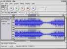

MAX 4.0: Software Libre para Windows.
OpenCD basado en DiscTree

AUDACITY:
Audacity
es una herramienta que te permite grabar, editar y manipular archivos
de sonido digital en diversos formatos.
Además de crear tus propias grabaciones a partir de archivos
individuales, añadiendo múltiples efectos, puedes
importar archivos de audio en formato WAV, AIFF, AU, MP3, etc.
Audacity admite los comandos básicos de edición
(cortar, copiar, pegar, deshacer), mezcla canciones, e incluye un
editor de amplitud, un espectrograma y un analizador de frecuencias
implementados.
